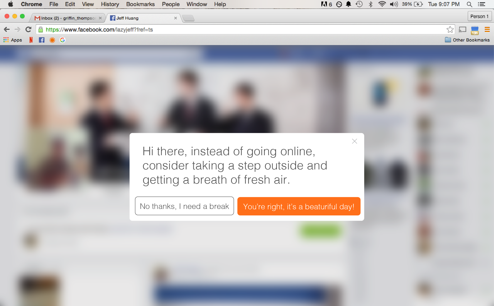
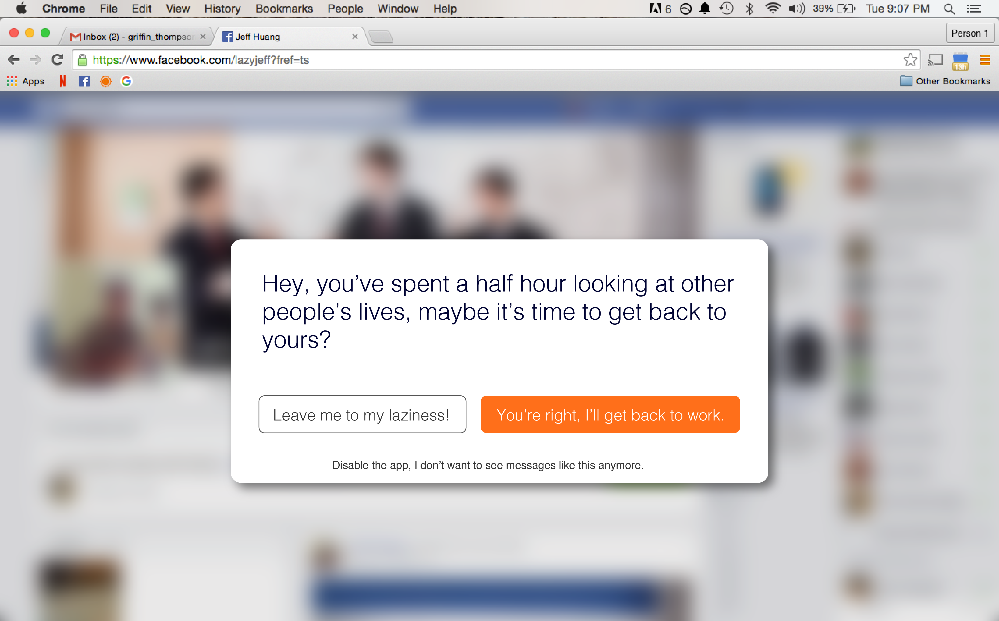
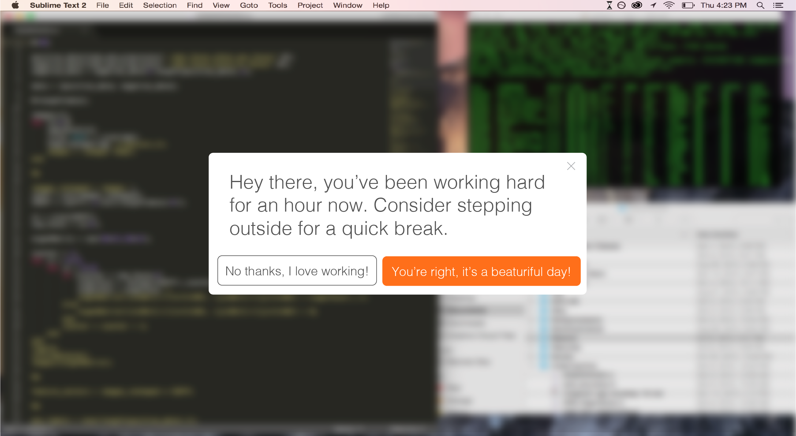
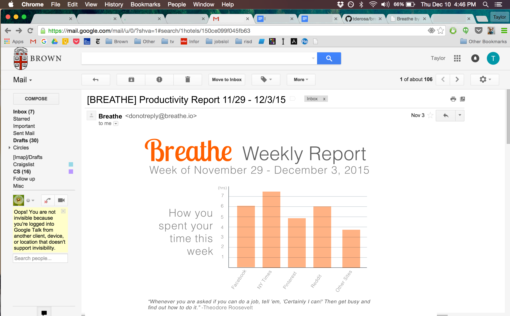

Pitch
Ever check your newsfeed for just a minute, but look at the clock and an hour has flown by? It’s called being unproductive and it’s a problem many of us deal with everyday. That’s why we are introducing Breathe. Our sleek and sexy web extension and desktop application sends productivity reminders to users with perfect pressure and at all the right times. Want to be productive? Just Breathe.
Background
The Internet is littered with articles, videos, and photos – all great content to keep you entertained and up to date with the latest trends. However, this content is often a wrench in daily productivity, the achilles heal of an efficient work day. Breathe works to solve this problem with an elegant, user-friendly approach to keep users on task and satisfied.
Current solutions to this problem are largely ineffective. There has been plenty of research on the physical and mental benefits of taking breaks from computer-related tasks and the difficulty and inefficiency related to lost focus. While we are all aware of this research, we continuously ignore the incessant pop-ups from the Sunlab computers (Linux Workrave) and instead find ourselves lost looking at our friend’s latest photo album. Workrave and other timer-based applications are ineffective because they typically interrupt the user in the middle of a task, rather than in between tasks. No one wants to take a break in the middle of writing a line of code.
Breathe modal for the web.
Breathe modal reminder for the web.
Breathe desktop modal.
Weekly productivity report.
Concept
We have all worked with break reminder apps, like WorkRave, but the interface has always been jarring and counterproductive. Breathe hopes to fix this. It is a web extension and desktop application that helps users remember to take breaks by giving quirky and aesthetically pleasing reminders at just the right moment. On web, the extension alerts the user based on what website they are on, how long they have been on that site, and what time of day it is. For example, if a user is on Facebook, they will receive a different reminder than when they are on The New York Times website. To begin, when the user lands on the site, the extension slowly blurs the page and reveals a reminder box with a message prompting the user to take a break from their computer. If the user instead decides to remain on this page, they can “snooze” the reminder and will get an extra few minutes before the next reminder.
For desktop, the application seeks to enhance productivity by giving the user reminders between tasks. While the reminder is aesthetically similar to the chrome extension, the desktop version allows users to customize which applications the reminders are activated for. One of the main problems of WorkRave is that it would interrupt the user’s workflow. Breathe fixes this problem by recognizing key opportunities for breaks in the user’s workflow so focus is never lost or interrupted. When the user stops working in a particular application or for an extended amount of time, the same blur begins. The blurring effect is important because it removes the jarring problems in other break apps. We also decided a timer is counterproductive because it increases the user’s anxiety and takes their focus away from the task at hand.
In terms of the message’s design, we explored different options and found it was most effective to have a message slowly appear in a modal over a blur because this gave the message a prominent location on the desktop without cluttering the screen. The first design consisted of a dropdown topbar, meaning a small bar would sit at the top of either the application or desktop, signifying that the app was running in the background. When a reminder arrives, this small bar expands to about 100px height, spanning the width of the application or desktop. Inside this larger bar was the message, snooze, and break buttons. When the user clicked “snooze” the large bar would shrink again into the smaller bar, replacing “Breathe” with our hourglass icon, to imply a timer has been set. We found this iteration caused similar anxiety-inducing problems as seen in WorkRave and other applications so we decided to move on. After this iteration, the second design we attempted had the message floating on the left side of the screen. This design championed the fluidity of the app and emphasized the user’s flow by side-stepping any abrasive interactions. We found this design was not effective because it did not give enough focus to the message, thereby undermining the prompt for the user. Through these two iterations, we landed on our final design. We found the blurring and fading modal answered problems of anxiety while giving weight to the prompt and action buttons. The clean white interface implies an inviting environment for the user and the orange button maintains a sense of urgency without overwhelming the user.Additionally, the simplicity of the modal removes clutter, creating a stress-free environment.
We also decided the application would send weekly productivity reports. At its core, this project is behaviorally focused. The design of the email is intended to give the user a quick breakdown of their productivity, as seen through the application. For example, how often are they taking breaks versus spending more time on social media sites. While a circle graph would be effective in showing the overall distribution of time, we found a bar graph is most effective in showing where the user is spending their time in relation to other applications or breaks. This comparative approach allows the user to quickly identify pitfalls in their workflow. Underneath the focus of the email we decided to give a motivational quote because, after scrutinizing their behavior, we thought it’d be nice to give the user a little push.